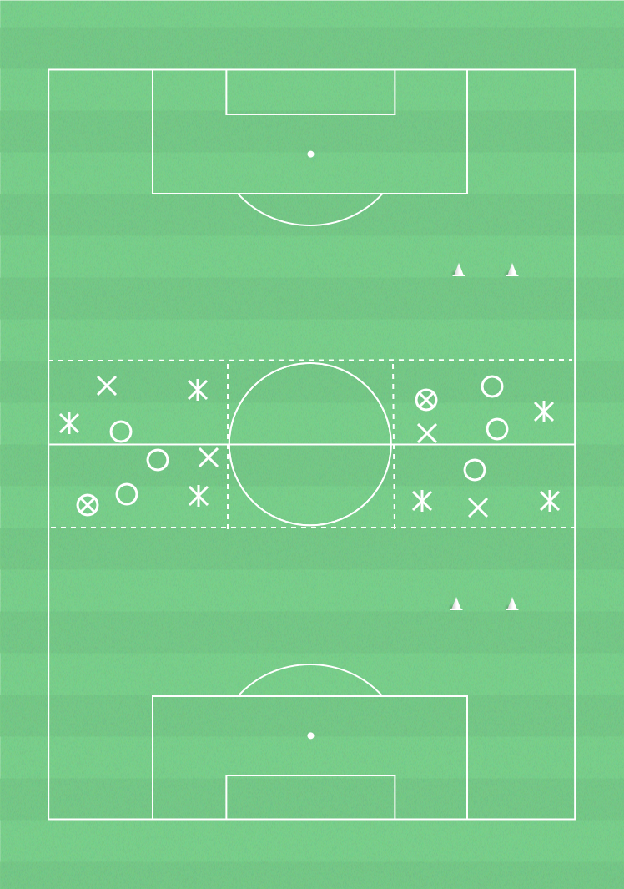

 ▶
▶
Återerövring av bollen
För att direkt kunna ta tillbaka bollen efter bollförlust och för att förhindra att motsåndarna kontrar.
Återerövring:- Pressa snabbt bollhållaren efter att ha tappat bollen.- Kom på försvarssida om ni blir passerade.
Speluppbyggnad:- Grundförutsättningar i anfallsspel.
6-10 spelare, yta 14x12m, bollar, västar, konor
3 lag med lika många i varje. 2 lag spelar mot 1 och försöker hålla bollen inom laget innanför ytan. När det undertaliga laget vinner bollen ska de behålla bollen så länge de kan. Det gäller för det övertaliga laget att ta tillbaka bollen så snabbt som möjligt. Räkna det undertaliga lagets antal passningar. Byt försvarande lag efter 1 minut.Intervall: 3 min spel - 1 min koordination och rörlighet